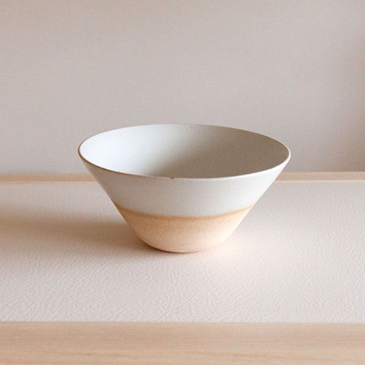

otonarisan
信楽焼/Shigarayakiware
信楽焼の焼かれた甲賀地域は三重県伊賀地域と隣接し、同じ古琵琶湖層の粘土層を利用しているため、信楽焼と伊賀焼は雰囲気がよく似ています
古琵琶湖層の粘土、「古信楽」と呼ばれる信楽特有の土味を発揮して、素朴であたたかい情感があります




歴史/History
聖武天皇が紫香楽宮（しがらきのみや）を作る時に、瓦を焼いたのが始まりと言われています
鎌倉時代中期には主に水瓶などが作られ、安土桃山時代には茶の湯の発達により、茶道具の生産が盛んになりました
茶器などの茶道具の名品が生まれ、信楽焼のわび・さびの味わいは現代にも生きています